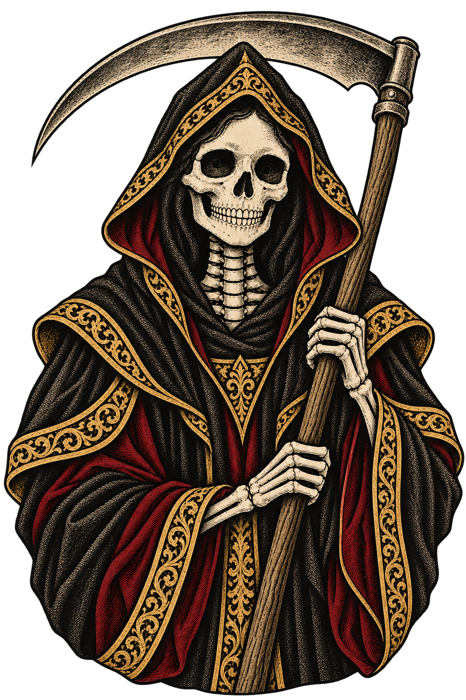
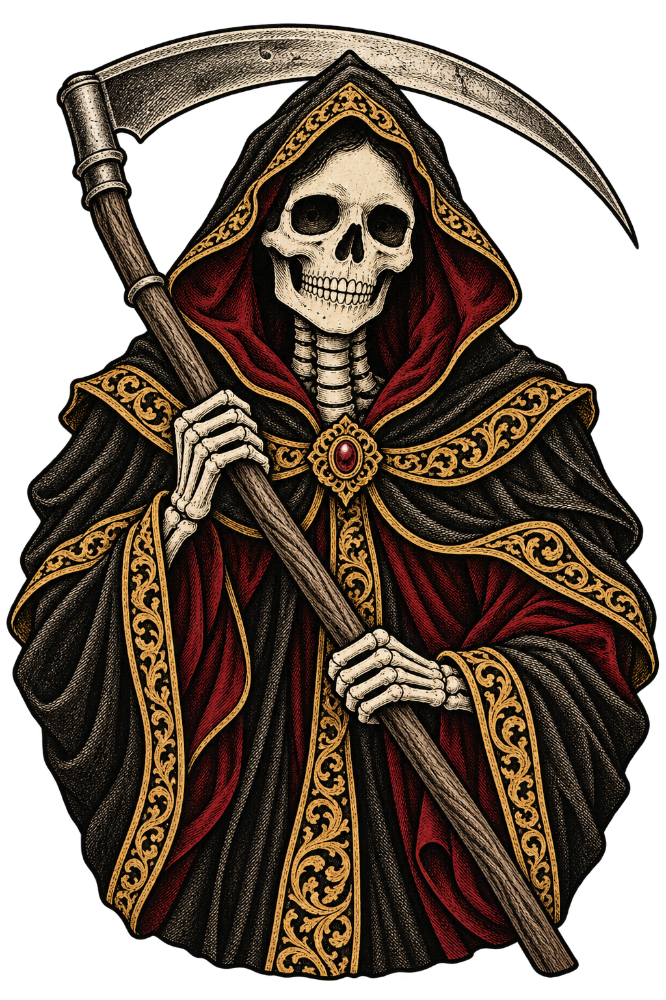
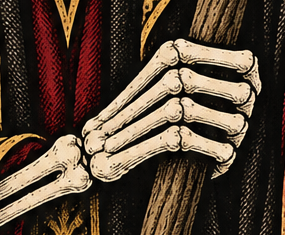
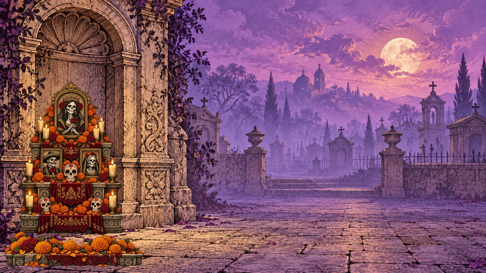
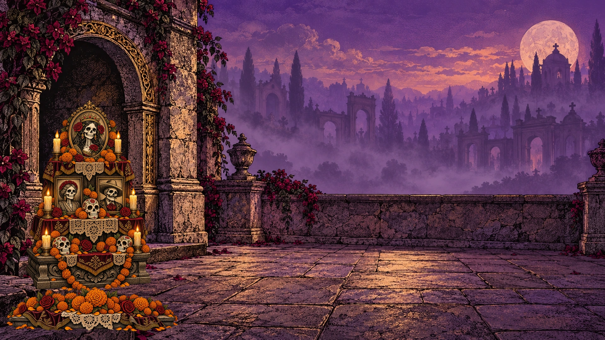

A — исходник

Тот же встроенный генератор и прямой референс Queen A, как в phase2b. Иллюстрация растровая; утверждённая геометрия карты, золотая кромка и отдельный цвет фона — векторные. У Жнеца нет индексов ранга и масти. На доске меняется только вид настоящих бонусных символов.







Плотные пальцы и условное соединение запястья. Обычный кроп исходника, без правок.

Крайний палец справа короткий и плотный. Обычный кроп исходника, без правок.
Бирюзовый лунный свет, туман, камень и неподвижные свечи на могилах. Главная группа могил находится ниже свободной области счётчиков. Верхние углы на 390×844 сохранены. Мобильный кроп берёт атмосферную часть сцены: главный предметный слой остаётся за пределами камеры, вместо размещения под доской.
Полный кадр ниже использует настоящий банк ×3 / 9 FS. Здесь ×10 и +5 показаны отдельно как состояния дизайна, без изменения результата или математического максимума.
Oswald 600, как Balance / Bet / WIN. Прописные буквы, золото и трекинг 2.3 px. Положение табло, выплаты, лампы выигравших рук и остальные строки сохранены.
На 390×844 боковое табло отсутствует, как в текущем интерфейсе. Изменение заголовка проверяется на desktop.
Найдена одна отдельная генерация: phase2b-frame-2026-09-30. Native proof desktop / portrait и восемь slices — производные того же источника. Резные углы исходной рамки переведены в векторные контуры с сохранением гравировки. Чёрные рейки и узкие золотые кромки восстановлены отдельно, без диагональных мотивов. Размер доски и положение всех карт сохранены.

Растровый референс; его диагональные мотивы не установлены.
Четыре угла из найденного источника; только пути, без встроенных PNG. Длинные рейки без диагонального узора.
A — каменная офренда в сумеречной нише. B — резное дерево, бархат и бумажное кружево. Дальний план / офренда / передний план отданы отдельными слоями. Свечи стоят сбоку от окон портретов. Флажки и лепестки — отдельные PNG-спрайты для движения.


Изменён только контур второй буквы: открытые вертикальные штрихи и округлое нижнее соединение вместо острого клина. Остальные буквы, материал и лента утверждённого B сохранены.
